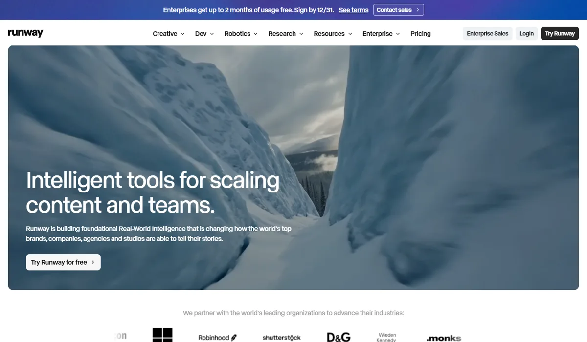
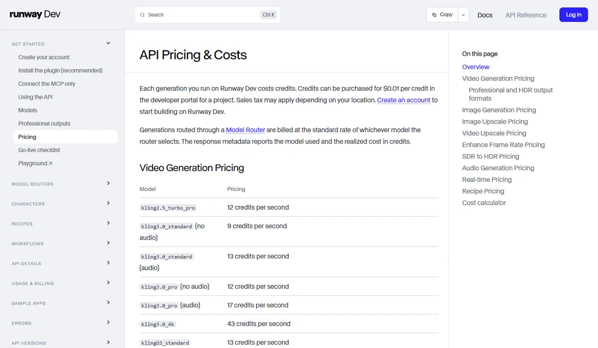

RunwayRunway AI, Inc.
Runway 是视频生成里商业化最快的专业公司：年化收入 2026 年 9 月突破 2 亿美元、半年翻倍，估值 53 亿美元，客户覆盖 95% 的《财富》100 强。它正在从“自研模型的公司”变成“视频创作平台”：订阅和 API 里同时提供自家 Gen-4.5 和可灵、Seedance、Nano Banana、Veo、GPT Image 等十多家对手的模型。
一页结论
- 收入增长最快：年化收入从 4 月约 1 亿美元翻倍到 9 月 2 亿美元，净收入留存超过 300%；彭博援引知情人称年底有望超过 3.5 亿美元S1
- 从模型公司变成平台：订阅和 API 里同时提供自家 Gen-4.5 与可灵 4.0、Seedance 2.5、Nano Banana、Veo 3.1、GPT Image 等第三方模型，并推出按需选模型的“模型路由”S3S4
- 企业与影视客户：与狮门影业合作训练专属模型（基于 2 万多部作品），与 AMC 电视网合作；Runway Dev 客户包括 Adobe、Cloudflare、Expedia、ShutterstockS1S5
- 模型排名不再领先：Gen-4.5 在 2025 年 12 月发布时曾以 1,247 分登顶 Artificial Analysis 文生视频榜，但当前含音频的新版榜单未收录 RunwayS1S6
- 押注世界模型与机器人：2025 年 12 月发布首个世界模型 GWM-1，官网导航已单列“机器人”业务S7S8
01公司介绍
| 项目 | 内容 |
|---|---|
| 公司 | Runway，2018 年由纽约大学 ITP 校友 Cristóbal Valenzuela、Alejandro Matamala、Anastasis Germanidis 创立S5 |
| 官网 | runway.com（原 runwayml.com） |
| 总部 | 美国纽约曼哈顿；2026 年开设东京、伦敦、巴黎办公室S1S5 |
| 融资 | 2023 年 6 月估值 15 亿美元；2025 年 4 月 3.08 亿美元、估值 30 多亿美元；2026 年 2 月 E 轮 3.15 亿美元、估值 53 亿美元，General Atlantic 领投，英伟达、富达等参投S2S5 |
| 渊源 | 2022 年 8 月与慕尼黑大学 CompVis 团队联合发布开源模型 Stable DiffusionS5 |
02公司战略
Runway 的主线是“从工具到平台、从内容到现实世界”：在创作者和企业里占住工作流入口，把最好的模型（包括对手的）都接进来；同时投入世界模型和机器人。
- 多模型平台：订阅档位标明可用 Gen-4.5 以及可灵 4.0、Nano Banana Pro、Seedance 2.5 等第三方模型；API 提供“模型路由”，按任务自动选模型、按所选模型计费S3S4
- 企业优先：2026 年 7 月推出 Runway Dev，承诺 99.9% 可用性；企业从试点进入正式生产流程S1
- 影视合作：为狮门影业训练只供其电影人使用的专属模型；与 AMC 电视网合作生成营销图片和节目预览；连续举办 AI 电影节S5
- 世界模型与机器人：GWM-1 是其首个世界模型；官网首页把“机器人”与“创意”“开发”并列S7S8
- 全球扩张：2026 年 6–7 月开设东京、伦敦、巴黎办公室S1
03定位与竞争
一句话定位：为品牌、广告代理、影视公司和开发者，在营销内容与影视制作中，提供聚合多家顶级模型、可规模化生产的视频创作平台。
| 目标用户 | 主要入口 | 依据 |
|---|---|---|
| 品牌与企业 | Runway 企业版 | 95% 的《财富》100 强在用其工作流；Dolce & Gabbana、Palo Alto Networks 用于营销内容S1 |
| 广告代理与影视公司 | Runway 创作工具 | 官网合作伙伴包括 Wieden+Kennedy、Monks；狮门影业、AMC 合作S5S8 |
| 开发者与 AI 应用 | Runway Dev API、插件、MCP | 客户包括 Adobe、Cloudflare、ElevenLabs、Expedia、Shutterstock、Figma Weave、Quora、GammaS1S3 |
| 个人创作者 | 网页、iOS App | 联合 CEO 称支持 6,000 多万创作者S1S5 |
04产品与模型矩阵
| 类别 | 模型 / 产品 | 定位 | 状态（2026-11） |
|---|---|---|---|
| 视频 | Gen-4.5 | 旗舰视频模型；2025 年 12 月发布，2026 年 1 月加入图生视频 | 可用，API 每秒 12 积分（0.12 美元）S1S3 |
| 视频 | Gen-4 Turbo | 低价快速版 | 每秒 5 积分S3 |
| 视频编辑 | Aleph 2.0 | 对已有视频做生成式编辑 | 每秒 28 积分，单次最低 56 积分S3S5 |
| 表演捕捉 | Act-Two | 用真人表演驱动角色 | 每秒 5 积分S3S5 |
| 图像 | Gen-4 Image / Turbo | 自研图像模型 | 每张 2–8 积分S3 |
| 第三方模型 | 可灵 3.0 / 4.0、Veo 3.1、Seedream 5、Nano Banana 2.1、GPT Image 2 / 2.5、Grok Imagine、Ideogram、Bria 等 | 统一积分计费 | API 与订阅中可用S3S4 |
| 世界模型 | GWM-1 | 首个世界模型 | 2025 年 12 月发布S7 |
| 开发者 | Runway Dev、模型路由、插件、MCP | 企业 API 平台 | 2026 年 7 月推出S1S3 |
| 3D | — | 无 3D 资产生成产品 | — |
创作工作台
- 网页与 iOS App 中生成、编辑（Aleph）、表演捕捉（Act-Two）S5
多模型选择
- 同一积分体系下切换 Gen-4.5 与第三方模型；Pro 档含 Topaz 无限放大S4
Agent 与工作流
- API 提供模型路由、角色、配方（Recipes）、工作流，以及插件和 MCP 接入S3
- 狮门影业合作专属模型基于 2 万多部作品训练S5
- 融资 3.08 亿美元估值 30 多亿美元S5
- E 轮 3.15 亿美元估值 53 亿美元S2
- 推出 Runway Dev99.9% 可用性承诺S1
- 年化收入 2 亿美元半年翻倍S1


05生成能力与可控性
Runway 的竞争力越来越来自“工作流 + 多模型”，而不是单个模型的排名；Gen-4.5 发布时曾登顶，但当前榜单未收录。
| 能力 | Runway |
|---|---|
| 自研视频 | Gen-4.5 文生视频与图生视频；TechCrunch 报道 2025 年 12 月加入原生音频S1S7 |
| 视频编辑 | Aleph 2.0 对已有视频进行生成式修改S3S5 |
| 表演驱动 | Act-Two 用真人表演驱动角色动作与表情S3S5 |
| 多模型 | 可在同一平台调用可灵 4.0（720p、1080p）、Veo 3.1、Seedream 5、Nano Banana 2.1、GPT Image 2.5 等S3 |
| 自动选模型 | 模型路由按任务选择模型，按所选模型的标准价计费S3 |
| 专业输出 | 提供专业格式与 HDR 输出、放大、补帧等后期能力S3 |
第三方评测怎么说
| 评测方 | 时间 | 对比对象 | 结论 |
|---|---|---|---|
| Artificial Analysis（用户盲选，TechTimes 引述） | 2025-12 | Gen-4.5 vs Veo 3 等 | Gen-4.5 以 1,247 分登顶当时的文生视频榜，高于 Veo 3 的 1,226 分S1 |
| Artificial Analysis（当前榜单） | 2026-11-04 访问 | 含音频的 AA-Video-T2V v2.1 | 未收录 Runway，无法确认 Gen-4.5 当前的相对位置S6 |
| Decrypt（转述 BFL 自测） | 2026-07-23 | FLUX 3 vs Runway Gen-4.5 | BFL 称评审在 77% 的对比中选择 FLUX 3（厂商自测，仅作背景）S10 |
尚未找到 2026 年署名媒体对 Gen-4.5 的独立对比实测。
评测共识：Gen-4.5 曾是标杆，但 2026 年新出的带音频模型密集上榜后，Runway 自研模型的领先地位已无法从第三方数据确认；它的竞争力更多体现在平台和企业交付上。
06解决方案与场景
07商业模式与价格
订阅（按积分）+ 企业合同 + API；第三方模型也按积分计费，Runway 赚取平台差价和工作流价值。
| 订阅 | 月付 | 年付（每月） | 每月积分 |
|---|---|---|---|
| Free | $0 | — | 一次性 125 |
| Standard | $15 | $12 | 625 |
| Pro | $35 | $28 | 2,250 |
| Max | $95 | $76 | 9,500 |
| Enterprise | 联系销售 | — | 年底前签约最多免 2 个月 |
Runway 官方价格页，2026-11-05 访问；Standard 起可用全部模型（含第三方）。来源：S4
| API 模型 | 积分 | 折合美元 |
|---|---|---|
| Gen-4.5 | 每秒 12 | 每秒 $0.12 |
| Gen-4 Turbo | 每秒 5 | 每秒 $0.05 |
| Aleph 2.0（视频编辑） | 每秒 28 | 每秒 $0.28 |
| Veo 3.1（含音频） | 每秒 40 | 每秒 $0.40 |
| 可灵 4.0 1080p（11 月折扣价） | 每秒 18.8 | 每秒 $0.188 |
| Nano Banana 2.1 1K | 每张 4 | 每张 $0.04 |
Runway Dev 官方价格，1 积分 = 0.01 美元。来源：S3
| 任务 | 用什么 | 估算成本 |
|---|---|---|
| 一条 8 秒视频 | Gen-4.5 / Gen-4 Turbo | $0.96 / $0.40 |
| 一条 8 秒带音频视频 | Veo 3.1（经 Runway） | $3.20 |
| 一张 1K 图 | Nano Banana 2.1（经 Runway） | $0.04（Google 官方价 $0.034） |
按 Runway Dev 积分价换算；可以看出 Runway 转售第三方模型时有一定加价。来源：S3
08上下游与渠道
09用户、客户与收入
10用户口碑与容错设计
11版权与合规
12近期动态
13潜在风险分析意见
- 供应商就是对手：Google、快手、字节一边通过 Runway 卖模型，一边推自己的创作平台（Flow、可灵、即梦），随时可能调整供货条件
- 自研模型掉队：如果 Gen 系列持续落后，Runway 会更像“代理商”，毛利和估值逻辑都会被重估
- 平台加价空间有限：客户可以直接向模型厂商采购，Runway 必须用工作流和服务证明溢价
- 多线投入：同时做视频平台、世界模型和机器人，资源可能分散
- 版权诉讼：艺术家集体诉讼尚未结束
14综合结论分析意见
关键动作拆解（三问法）
| 动作 | 为什么做（推断） | 效果如何 | 要不要学 |
|---|---|---|---|
| 接入对手的模型 | 单一模型的领先期越来越短，客户要的是“总能用上最好的模型” | 订阅和 API 已覆盖十多家厂商的模型S3S4 | 高优借鉴做工作流平台时不要绑定单一模型 |
| 主攻企业客户 | 企业付费能力强、留存高 | 净收入留存超过 300%，年化收入半年翻倍S1 | 借鉴视频生成的钱主要在企业 |
| 为狮门训练专属模型 | 用授权数据规避版权风险，绑定大客户 | 成为行业标杆案例S5 | 借鉴授权数据 + 专属模型 |
| 做世界模型和机器人 | 视频模型的长期价值在于理解物理世界 | 处于早期S7 | 观望 |
优势
- 收入增长与企业留存
- 多模型平台与工作流
- 影视与品牌客户关系
劣势
- 自研模型排名不确定
- 依赖上游对手供货
- 无 3D 产品
机会
- 企业规模化内容生产
- 开发者 API 市场
- 世界模型与机器人
威胁
- 上游厂商自建平台
- 客户直采模型
- 版权诉讼
对本系列三个问题的回答
- 大厂会不会通吃？ Runway 的答案是“不跟大厂比模型，而是把大厂的模型变成自己的货架”；只要企业客户需要一个中立的工作流平台，专业公司就有位置
- 钱从哪里来？ 主要来自企业：95% 的《财富》100 强、净收入留存超过 300%，年化收入 2 亿美元并预计年底超过 3.5 亿美元，是本系列增长最快的专业公司
- 3D 离商用还差什么？ Runway 没有 3D 资产产品，世界模型仍在早期
对 AI 产品团队的启示
高优借鉴
- 做多模型平台：模型领先期只有几个月，平台的价值是让客户始终能用上最好的模型
- 模型路由 + 透明计费：返回实际使用的模型和费用，让企业放心交给平台选择
- 企业 SLA 与成本计算器，是从“工具”走向“生产系统”的必要条件
观望
- 世界模型和机器人：Runway 已投入，但距离收入还远
不建议
- 完全依赖转售第三方模型而放弃自研：上游一旦调整供货，平台会很被动
- 在没有授权数据的情况下为大 IP 方训练专属模型
信息缺口
以下信息未找到可靠的公开来源，本报告不做推测。
- Gen-4.5 在当前第三方榜单中的位置（新版含音频榜单未收录）
- 自研模型与第三方模型各自的收入占比
- GWM-1 世界模型的商用情况
- 2026 年署名媒体对 Gen-4.5 的独立对比评测
- 艺术家集体诉讼的最新进展
来源
A 官方 · B 权威媒体或第三方 · C 社区（仅用于口碑与线索）。访问日期均为 2026-11-05。
- S1 · BRunway AI Hits $200M ARR as Enterprise Video Adoption Triples Existing SpendTechTimes（援引联合 CEO 领英帖子与彭博采访） · 2026-09-08
- S2 · BAI Video Startup Runway Valued at $5.3 Billion With New FundingBloomberg · 2026-02-10
- S3 · AAPI Pricing & CostsRunway Dev 文档 · 2026-11-05 访问
- S4 · APricingRunway · 2026-11-05 访问
- S5 · BRunway (company)Wikipedia（汇总公司公告与媒体报道） · 2026-11-05 访问
- S6 · BAA-Video-T2V v2.1 Text to Video LeaderboardArtificial Analysis · 2026-11-04 访问
- S7 · BRunway releases its first world model, adds native audio to latest video modelTechCrunch · 2025-12-11
- S8 · ARunway 官网首页Runway · 2026-11-05 访问
- S9 · AIntroducing Gemini Omni for Google Flow and Flow MusicGoogle 官方博客 · 2026-05-19
- S10 · BBlack Forest Labs Unveils FLUX 3 AI: Ditches Stills for Video—And Robot HandsDecrypt · 2026-07-23
- S11 · BMidjourney（诉讼部分）Wikipedia · 2026-11-05 访问